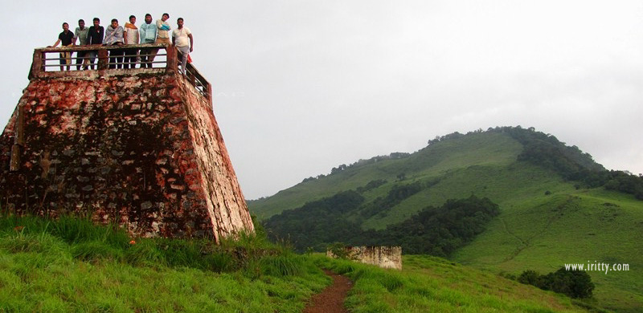
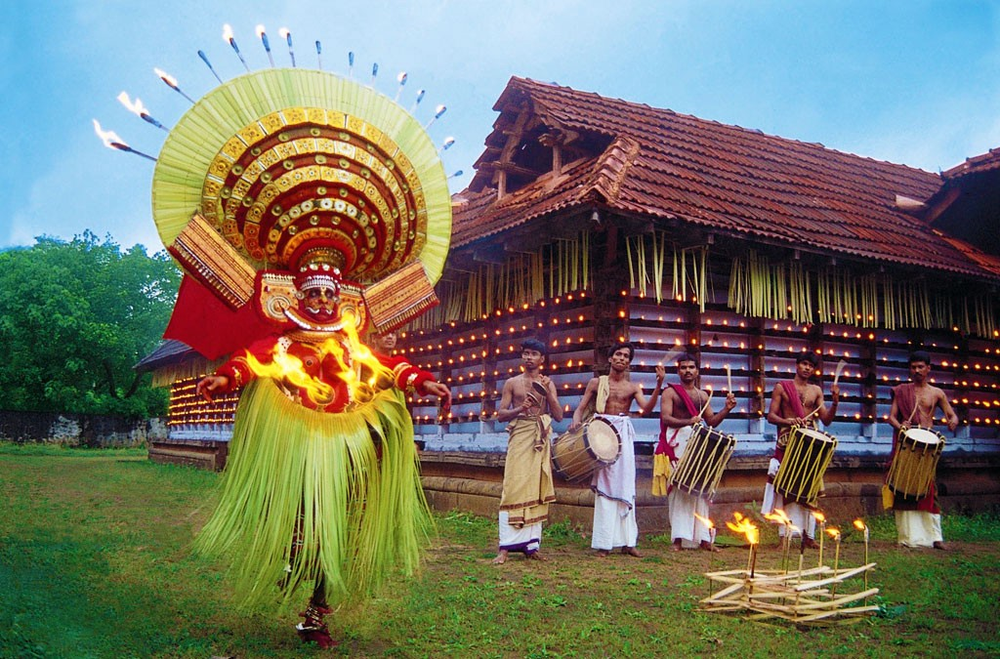
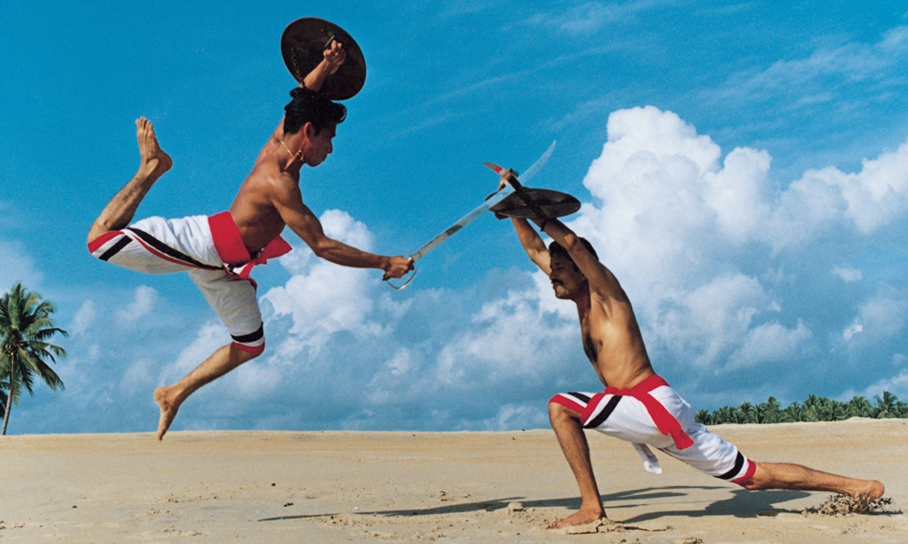

PAITHAL MALA
Paithalmala is one of the most amazing tourist destinations in the district of Kannur. Nestled in the Western Ghats, the hill station looks over the Coorg valleys on one side and the plains of Kannur on the other. From the crest, if the fog lifts a little, you’d see tiny matchbox-sized houses in villages far down the valley.The trail uphill is not arduous for a seasoned trekker. Where the forest teeters to a halt, the vast grassland takes over. It is about 5 km trekking through the semi-evergreen shola forests to reach the top. Paithalmala is a matter of some wise choices. You have to choose between two trekking routes, to begin with. One that starts with Kappimala (Near Alakkodu), is arduous, and hence avoided by the faint-hearted.MUZHAPPILANGAD DRIVE-IN BEACH
Muzhappilangad Beach is famous for being Kerala's only drive-in beach. At about 7km from Thalassery in Kannur, you have a 4 km stretch of sand that awaits you to simply drive along as you soak in the view of the beautiful Malabar Coast. Along the way, one gets to munch on delicacies from a number of shacks that offer authentic Malabar cuisine. It is often considered a swimmers paradise as the black rocks protect the beach from deep currents. This is a perfect way to relax and soak in this clean and well maintained beach. One can also partake in adventure sports like paragliding, parasailing and micro light flights along with water sports, power boating or a simple catamaran ride.

THEYYAM
The great stories of Kerala are often retold using art forms. It is here that our legends truly come to life. Theyyam is a famous ritual art form that originated in North Kerala which brings to life the great stories of our State. It encompasses dance, mime and music. It exalts the beliefs of the ancient tribals who gave a lot of importance to the worship of heroes and the spirits of their ancestors. The ceremonious dance is accompanied by the chorus of such musical instruments as Chenda, Elathalam, Kurumkuzal and Veekkuchenda. There are over 400 separate Theyyams, each with their own music, style and choreography. The most prominent among these are Raktha Chamundi, Kari Chamundi, Muchilottu Bhagavathi, Wayanadu Kulaven, Gulikan and Pottan.
ARAKAL PALACE
The residence of the erstwhile Arakkal Royal Family from North Kerala is unique in its architecture and history. The Arakkal Palace, home to the only Muslim royal family of Kerala, is located in Kannur. This picture captures the splendour and might of this magnificent fortress perfectly.

KALARI PAYITTU
Kalaripayattu, the traditional and exclusive martial art form of Kerala is widely acclaimed as a synthesis of body control, treatment and armed and unarmed combat. This immaculate martial art form can be witnessed in its fullest, bearing all traditional and orthodox techniques and systems of treatment at the C.V.N. Kalari at kannur. The Kalari (arena) itself is set amidst serene surroundings with an ambience that is most suited for the practice of Kalaripayattu.